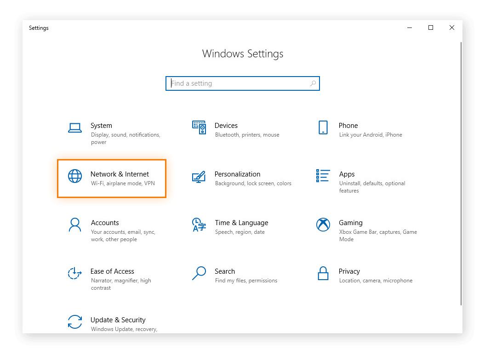
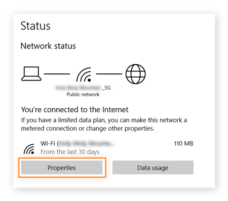
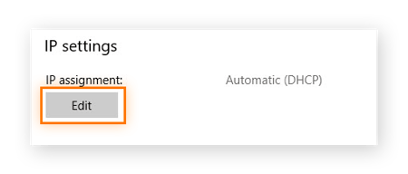
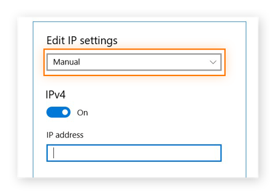

What is an IP address?
An IP address is a unique number assigned to each device on a TCP/IP network. Just like your physical home address lets people know where to send your birthday cards, IP addresses identify computers and devices and allow them to communicate with each other.
Internally, IP addresses are stored as numbers. While computers are happy with numbers, humans prefer names. The Internet uses the Domain Name System (DNS) as your Internet address book, so you can use words (such as www.avast.com) instead of numbers to browse the Internet and address devices on your network. These devices could be anything that can connect to the Internet: computers, TVs, smart speakers, maybe even your refrigerator. Almost every electronic device in your home can have an IP address these days.
When you type a URL into a web browser, it uses DNS to look up the IP address for that domain. For example, if you type www.avast.com into your browser, DNS returns one of several IP addresses, including 77.234.41.52.
There are two versions of commonly used IP addresses: IPv4 and IPv6.
IPv4 has four hexadecimal numbers separated by periods - eg 192.168.0.1
and IPv6 has six hexadecimal numbers separated by colons - eg 2001:0db8:85a3:0000: 0000:8a2e:0370:7334.
There are nearly 4.3 billion IPv4 addresses, and we use nearly all of them. IPv6 addresses are much more numerous. We won't run out of IPv6 addresses until the heat death of the universe.
What is a static IP address?
A static IP address is simply an address that does not change. Once your device has been assigned a static IP address, that number typically remains there until the device is retired or your network architecture changes. Static IP addresses are often used by servers or other important devices.
How to set a static IP address?
To get a static IP address, you need to contact your ISP (Internet Service Provider) and request it from them. You can then change your regular IP address and set a static IP address in Windows settings. Note that creating a static IP address is an advanced networking function that requires basic knowledge of the TCP/IP protocol.
Use the static IP address assigned to you by your ISP, here's how to manually enter an IP address on a Windows 10 device:
1. Click Start, and then click Settings. Note that you need administrator privileges.

2, Select Network and Internet in the Settings window.
3. Click Properties under the Local Area Connection field.
4, Click Edit under IP Assignment.
5, Select Manual, turn on the IPv4 button, and enter the IP address. Click Save.
Follow these step-by-step instructions on how to manually enter your IP address on another device.
Static IP addresses are assigned by your Internet Service Provider (ISP). Depending on the nature of your service agreement, your ISP may or may not assign you a static IP address. We'll cover your options later, but for now assume a static IP address will add to your ISP contract costs.
Static IP addresses can be IPv4 or IPv6; in this case, the important quality is static. One day, every connected device we own may have a unique static IPv6 address. We haven't. Currently, we usually use static IPv4 addresses as permanent addresses.
What is a dynamic IP address?
As the name suggests, a dynamic IP address may change at any time, sometimes at a moment's notice. Dynamic addresses are assigned by a Dynamic Host Configuration Protocol (DHCP) server as needed.
We use dynamic addresses because IPv4 does not provide enough static IP addresses. So, for example, a hotel might have a static IP address, but each individual device in its room will have a dynamic IP address.
On the Internet, your ISP's DHCP server may assign your home or office a dynamic IP address. On your home or business network, your devices' dynamic IP addresses -- whether they be PCs, smartphones, streaming devices, tablets, or whatever you own -- are likely assigned by your network router. Dynamic IP is the standard used by consumer devices.

Static IP vs. Dynamic IP: Which is Best for Me?
There is no perfect IP address solution that works for everyone and for all situations. Sometimes a computer or device is better off with a static IP address; sometimes a dynamic IP address works best.
Deciding
whether a dynamic IP address or a static IP address is better for you also depends on the nature of your connection. Static IP addresses are more likely to be associated with businesses, while dynamic IP addresses
are more suitable for home networks.
Advantages of Static IP
There are many advantages to using a static IP address. These benefits include:
Better DNS support: It is much easier to set up and manage static IP addresses with a DNS server.
Server Hosting: If you are hosting a web server, email server, or any other type of server, having a static IP address will make it easier for customers to find you via DNS. In practice, this means that customers can access your website and services faster if they have a static IP address.
Easy remote access: A static IP address makes it easier to work remotely using a virtual private network (VPN) or other remote access programs.
More reliable communications: Static IP addresses make it easier to use Voice over Internet Protocol (VoIP) for conference calls or other voice and video communications.
More reliable geolocation services: With static IP addresses, services can match IP addresses to their physical location. For example, if you use a local weather service with a static IP address, you're more likely to get the forecast you want than the forecast for your next city.

Best US Static Proxy IP
IPRoyal is a proxy service provider that is extremely friendly to the Chinese region, and its residential proxy solutions are very attractive
View IPRoyal
The cheapest static proxy
Proxy-seller is a data center proxy provider popular with many small internet marketers.
View Proxy-seller
The most affordable static proxy
Proxy Cheap is to provide affordable residential proxy IP, more than 6 million residential IP addresses. Buying proxy are very easy to use.
View Proxy CheapDisadvantages of static IP
Static IP addresses are not suitable for all situations.
Static IPs are easier to hack: With a static IP address, hackers know exactly where your server is on the Internet. This makes it easier for them to attack it. Avast Internet Security can help you in this regard.
Higher costs: ISPs often charge more for static IP addresses, especially with consumer ISP plans. Commercial ISP plans often include static IPs, at least as an option, but they are more expensive than end-user plans; be sure to ask if there is an additional charge.
Real World Security Concerns:Anyone with the right networking tools can find out where you and your computer are. A proxy IP such as Avast SecureLine can help alleviate this concern by hiding your physical location.
Advantages of dynamic IP
Dynamic IP addresses are easier to manage and less expensive to deploy than static IP addresses.
Simple auto-configuration: With dynamic IP addressing, the DHCP server will automatically assign the device the next available IP address. You don't need to do anything.
Lower Costs: Often, you can save money by using a dynamic IP address.
Unlimited IP addressing: Dynamic addresses allow you to reuse IP addresses. While on the network, your devices automatically configure new dynamic IP addresses as needed. So, for example, if you bring home a new computer, you don't have to manually delete the old computer or assign it a number; the network or router will handle it. This prevents confusing conflicts when two computers try to use the same IP address.
Potentially better security: With dynamic IP addresses, it is more difficult for potential attackers to target your networked devices. You can also increase your security by using a proxy IP for PC to hide your network address.
Better physical security: It is harder for snoopers to pinpoint your exact location. A proxy IP can also help with this.
Disadvantages of dynamic IP
Dynamic IP addresses are not suitable for all situations. They do not apply to internet-facing services such as web or email.
Unlikely to apply to hosting services: If you plan to host a website, email server, etc., using a dynamic IP address can be troublesome. DNS is not suitable for dynamic IP addresses because the addresses are always changing. There are dynamic DNS services that can solve this problem; however, they add expense and complexity. This can be a serious disadvantage.
Remote access may be restricted: Depending on your remote access software, your program may not be able to connect if you use a dynamic IP address. This is where a proxy IP program like Avast SecureLine Proxy IP really shines.
May cause more downtime: While this doesn't happen often, sometimes your ISP is unable to assign you a dynamic IP address. This may interrupt your internet connection. For individual consumers, this is only a temporary annoyance. If it takes your company website offline, that's a bigger problem.
Less accurate geolocation: A dynamic IP address can cause your geolocation services to fail because you can keep a dynamic address that no longer reflects your real location.
Summary
Generally, static IP addresses are best for businesses that host their own websites and internet services. Static IP addresses also work well when remote workers log into work via a VPN.
A dynamic IP address
is generally suitable for most consumers. They are cheaper and generally pose less of a security risk.
What type of IP address do you have?
Now that you understand the difference between a static IP and a dynamic IP, you may realize that it didn't matter which you used before. A quick way to find out your IP address and its type is to use a free online tool such as Avast's IP Checker.
Is it difficult to change the IP address?
If you get Internet service through an ISP or cable company, in most cases they will assign you a dynamic IP address.
In your own network, your device is assigned a dynamic IP address by default. Switching to a static IP address is usually not a big deal. You do this by going to your router's interface, finding the device you want to assign a static IP address to, and assigning it one (usually by entering the number manually). Details vary by router. On a network with an administrator, you'll need to ask the system administrator to do this for you.
How to protect your IP address, whether static or dynamic
Whether your Internet IP address is static or dynamic, your ISP (and tech-savvy bad guys) can figure out roughly where you are and what you're trying to do on the Internet. You probably want to hide your IP address - whatever it is - from snoopers. A VPN like Avast SecureLine VPN can help protect your security and privacy.